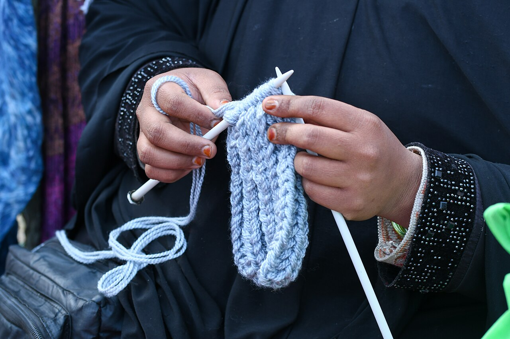

Learning a Small Skill Changes the Whole Week
Somewhere in most adults' lives there is a drawer of abandoned beginnings: the watercolor set from one ambitious January, the language app with the twelve-day streak, the guitar that now holds coats. We tend to read that drawer as evidence about ourselves — not musical, not artistic, not a "language person." But the drawer usually proves something else entirely: we chose skills that were too big for the time we actually had. The fix is not more discipline. The fix is a smaller skill. Learn one small thing — really learn it, to the level of "I can do that" — and a surprising amount of the week rearranges itself around the pleasure of being a beginner who is visibly improving.
Small is a strategy
A small skill has three properties. It fits in twenty minutes a day. It produces a visible result within a week. And it has a low embarrassment ceiling — nobody's dignity depends on it. Knitting one plain scarf qualifies. So does juggling three balls, shuffling a deck of cards properly, touch-typing, making a decent omelette, identifying ten birds by their calls, or keeping a houseplant alive on purpose rather than by luck. The history of such crafts is longer than the history of most professions; the curious can fall down a pleasant hole reading the history of knitting alone, which runs from medieval guilds to wartime rationing to today's packed yarn shops. Small skills are how humans have always made evenings interesting. We just outsourced the evenings for a while.

The first week is the whole game
Beginners quit in the first week because that is when the gap between taste and ability is loudest: you know what good sounds like, and you cannot make it yet. Small skills shrink that gap to a survivable size. On day one, the yarn fights back. On day three, your hands have learned something your brain hasn't caught up with, and the rows start coming out even. That moment — the first unmistakable evidence that practice works — is the entire engine. It is also easier to reach than it used to be: a free lesson library like Khan Academy covers the academic end of things, and for nearly every hands-on skill there is a patient stranger on the internet who has filmed the exact beginner mistake you are making and how to fix it. The resources are no longer the obstacle. The only real requirement is choosing something small enough to survive your actual schedule.
What it does to the rest of life
The strange thing is how far the effect leaks. Adults who take up a small skill often report the same side benefits, quite apart from the skill itself. Practice gives the day a hinge — a twenty-minute appointment with yourself that is neither work nor collapse. Progress in one corner of life quietly argues with helplessness in the others: it is harder to believe you are stuck in general when your hands learned a new trick in particular. And there is the social math. Small skills are conversation, gifts, and favors waiting to happen — the scarf, the card trick at dinner, the friend whose sourdough starter now has descendants in four kitchens. Coverage of the adult-learning boom, like NPR's stories on grown-ups returning to beginner lessons, keeps landing on the same observation: people rarely say the skill changed their life. They say the practicing did.
Small skills compound
One more effect shows up around month two: skills start introducing each other. The knitter discovers she can read a pattern, which is a small notation system, and notation stops being frightening in other places — sheet music, recipes in grams, the chord chart a friend hands her. The juggler finds his catching reflexes have improved his tennis, his cooking tosses, and his ability to rescue falling phones. Psychologists call this self-efficacy, but it feels less clinical from the inside; it feels like the world has become slightly more legible. Things that looked like talents — the colleague who "just knows" how to fold, fix, pronounce, or plate — resolve into what they always were: small skills, practiced past the awkward part, wearing the disguise of ease. Once you have watched your own hands go from clumsy to competent at one thing, you stop believing the disguise anywhere. That may be the deepest benefit on offer. A person with one finished scarf has permanent evidence about how learning works, and it contradicts almost everything the drawer of abandoned beginnings seemed to prove.
Choose yours like you mean it
A few rules for choosing well. Pick something with your hands if your days are all screens, and something with your head if your days are all lifting. Pick the version you can start this week with borrowed or cheap tools — the expensive kit is a reward for month two, not a ticket for day one. Tell one person what you're learning, not for accountability, but so someone can ask how it's going and give you the pleasure of answering. And set the bar at the honest place: not good, not talented — just a person who kept going for twenty minutes a day until one ordinary Tuesday the thing worked, and the whole week looked briefly, usefully, different.